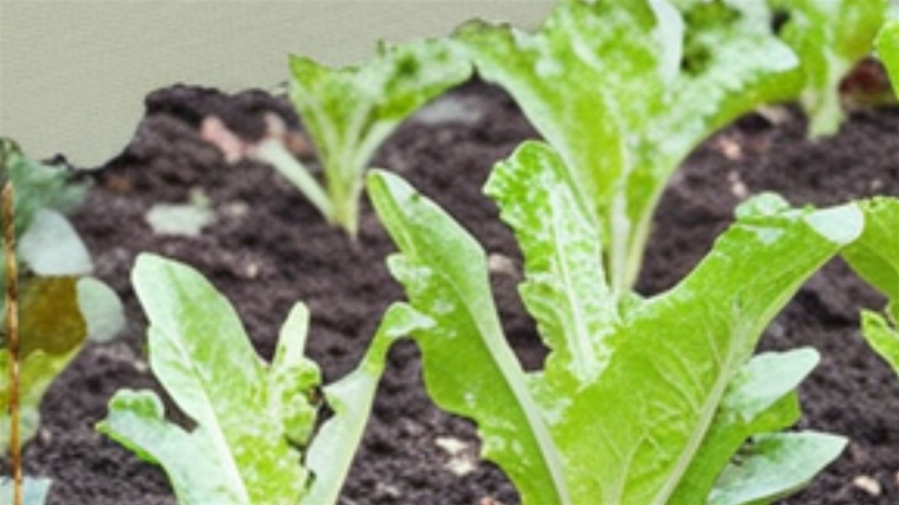

Was kann man im Herbst noch säen und pflanzen?
Die Gartensaison endet nicht mit der letzten Tomate. Sie endet mit der Tageslänge – und das ist ein Unterschied von mehreren Wochen.
Ab August wird im Beet Platz frei, und viele lassen ihn bis zum Frühjahr leer stehen. Dabei ist der Spätsommer eine der besten Aussaatzeiten des Jahres: Der Boden ist warm, die Keimung geht schnell, und mehrere Kulturen liefern noch im Herbst oder gleich im zeitigen Frühjahr, wenn sonst nichts da ist.
Die Regel, die alles bestimmt
Pflanzen wachsen nicht nach Kalender, sondern nach Licht und Wärme. Unterhalb von etwa zehn Stunden Tageslicht – in Deutschland ab Anfang November – stellen die meisten Kulturen das Wachstum praktisch ein. Sie sterben nicht, sie warten. Was bis dahin keine brauchbare Größe erreicht hat, holt das im Winter nicht mehr nach, sondern erst im Februar.
Daraus folgt die einzige Rechnung, die du brauchst: Kulturdauer der Pflanze plus zwei bis drei Wochen Sicherheitszuschlag, rückwärts von Anfang November. Ein Feldsalat, der sechs bis acht Wochen braucht, muss also spätestens Mitte September in der Erde sein.
Was ab August noch gesät wird
| Kultur | Aussaat bis | Ernte |
|---|---|---|
| Feldsalat | Mitte September | Oktober bis März, sehr frosthart |
| Spinat (Wintersorten) | Mitte September | Herbst und wieder ab März |
| Winterportulak (Postelein) | Anfang Oktober | Dezember bis April |
| Radieschen | Anfang September | vier bis sechs Wochen später |
| Rucola, Asia-Salate | Mitte September | laufend, verträgt leichten Frost |
| Winterkopfsalat | Ende August | überwintert, Ernte ab April |
| Petersilie, Kerbel | Ende August | Herbst und Frühjahr |
Was gesteckt statt gesät wird
Zwei Kulturen gehören ausdrücklich in den Herbst, weil sie eine Kälteperiode brauchen. Knoblauch wird von Oktober bis Anfang November gesteckt, etwa fünf Zentimeter tief, Spitze nach oben, Abstand fünfzehn Zentimeter. Im Frühjahr gesteckter Knoblauch bildet deutlich kleinere Knollen. Winterzwiebeln kommen Ende August bis Mitte September in die Erde und werden ab Mai geerntet, also Wochen vor allen anderen.
Was jetzt umgekehrt vom Beet kommt – Kartoffeln, Kürbis, Zwiebeln, Möhren – gehört ins Winterlager, und zwar jedes bei seiner eigenen Temperatur. Beide Herbstpflanzungen sind Lauchgewächse. Auf einem Beet, auf dem in diesem Jahr Zwiebeln oder Lauch standen, haben sie nichts verloren – die Fruchtfolge gilt auch für die Herbstpflanzung.
Was nicht mehr geht
Alles, was Frucht bildet, braucht Wärme und Zeit, die es nicht mehr gibt: Tomaten, Gurken, Zucchini, Bohnen, Mais, Kürbis. Auch Kohl ist zu spät – Grünkohl und Rosenkohl gehören in den Mai und Juni, nicht in den September. Wer sie jetzt noch setzt, erntet nichts, blockiert aber ein Beet, das eine Gründüngung gebrauchen könnte.
Etwas Schutz verlängert alles um Wochen
Ein einfaches Gartenvlies über den Herbstsaaten bringt zwei bis vier Grad und hält Nässe von den Blättern. Es wird lose aufgelegt und an den Rändern beschwert, nicht gespannt. Für Feldsalat und Spinat reicht das aus, um über den ganzen Winter zu ernten. Im Hochbeet ist der Effekt noch größer, weil der Boden dort schneller abtrocknet und weniger auskühlt.
Ein Rest Vorsicht bleibt beim Gießen: Im Herbst verdunstet wenig, und nasse Blätter bei niedrigen Temperaturen sind eine Einladung für Pilzkrankheiten. Morgens gießen, sparsam, und nur an die Wurzel.
Der Spätsommer belohnt den, der nach der Ernte nicht sofort aufhört. Wer im September zwanzig Minuten sät, steht im Januar bei Frost vor einem grünen Beet – und im April vor der ersten Zwiebel, während die Nachbarn noch planen.
Häufige Fragen
Was kann man im Herbst noch säen?
Feldsalat, Winterspinat, Rucola und Asia-Salate bis Mitte September, Radieschen bis Anfang September, Winterkopfsalat sowie Petersilie und Kerbel bis Ende August, Winterportulak sogar bis Anfang Oktober.
Bis wann kann man im Herbst säen?
Die Rechnung lautet: Kulturdauer plus zwei bis drei Wochen Zuschlag, rückwärts von Anfang November. Ab dann liegt die Tageslänge unter etwa zehn Stunden, und die meisten Kulturen stellen das Wachstum ein. Feldsalat mit sechs bis acht Wochen Kulturdauer muss also spätestens Mitte September in der Erde sein.
Wann steckt man Knoblauch?
Von Oktober bis Anfang November, etwa fünf Zentimeter tief, die Spitze nach oben, fünfzehn Zentimeter Abstand. Knoblauch braucht eine Kälteperiode, im Frühjahr gesteckt bildet er deutlich kleinere Knollen.
Was kann man im Herbst nicht mehr pflanzen?
Alles, was Frucht bildet: Tomaten, Gurken, Zucchini, Bohnen, Mais und Kürbis. Auch Grünkohl und Rosenkohl sind zu spät, sie gehören in den Mai und Juni. Wer sie im September noch setzt, erntet nichts und blockiert ein Beet.
Wie viel bringt ein Gartenvlies im Herbst?
Zwei bis vier Grad, und es hält Nässe von den Blättern. Lose auflegen und an den Rändern beschweren, nicht spannen. Für Feldsalat und Spinat reicht das, um den ganzen Winter über zu ernten.
Hortini rechnet dir für jede Kultur das letzte sinnvolle Aussaatdatum aus – auf Basis deines Standorts, nicht nach Faustregel.
Kostenlos ausprobieren